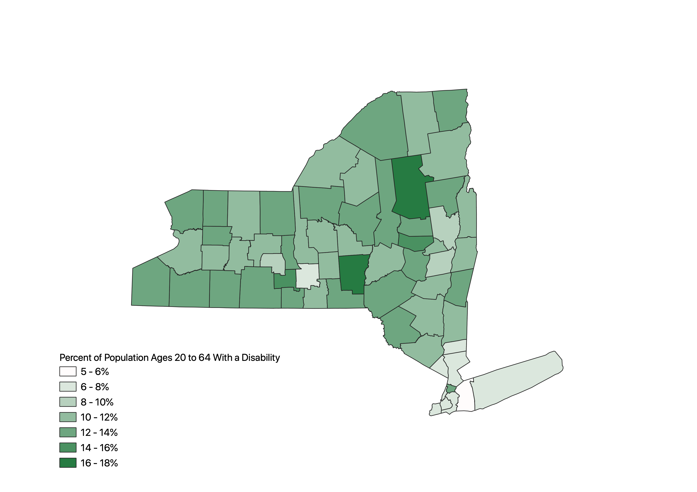
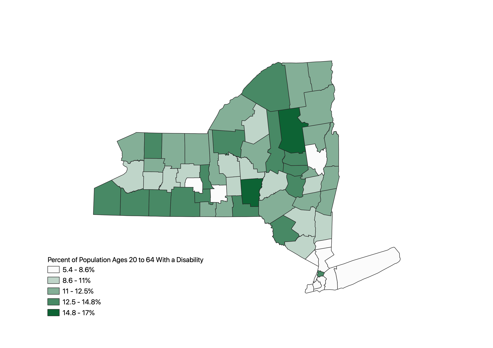
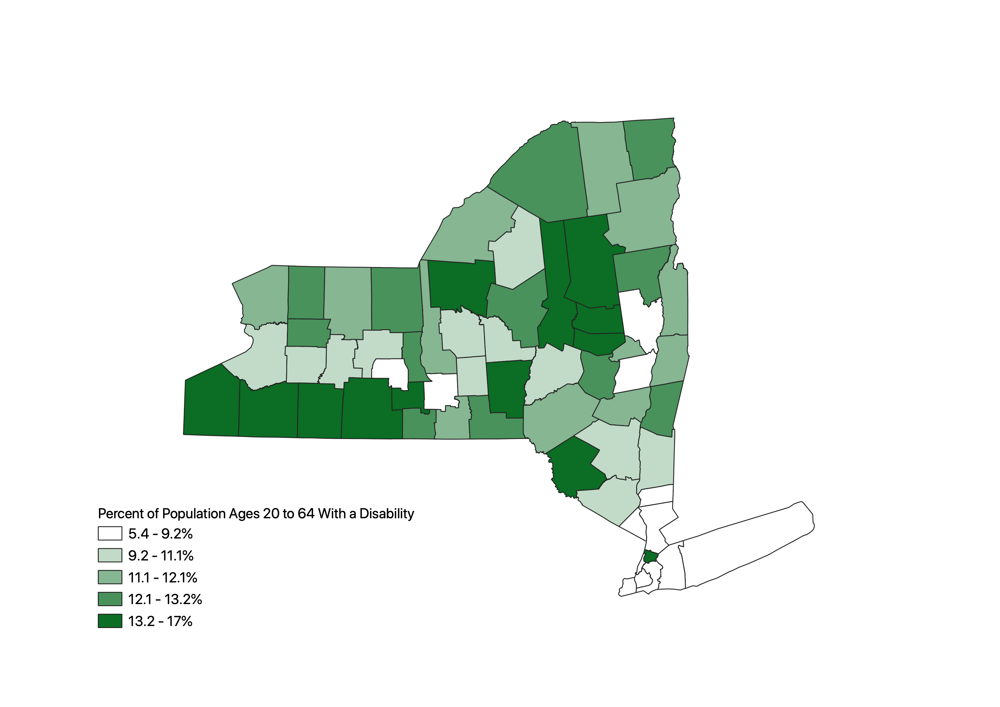

These maps show the percentage of the population ages 20 to 64 with a disability in the state of New York. The ratio was created by taking the total count of people ages 20 to 64 with a disability and dividing it by the total population ages 20 to 64 then multiplying by 100.
This shows the data displayed with pretty breaks, meaning that the data ranges will be represented by whole numbers. Personally, I think this makes the legend easiest to read. However, most of the counties appear to be in the 8-10% or 10-12% range and it can be a bit difficult to differentiate between the two colors.
This shows the data represented with natural breaks. I think this is the best way to represent the data because the data seems to be divided most evenly among each range.
This map shows the data represented with equal count (quantile) breaks. This representation makes the upper and lower extreme ranges much larger than the other ranges causing the map to be respresented more by very dark or very light colors.
